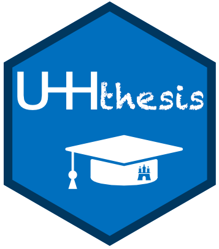
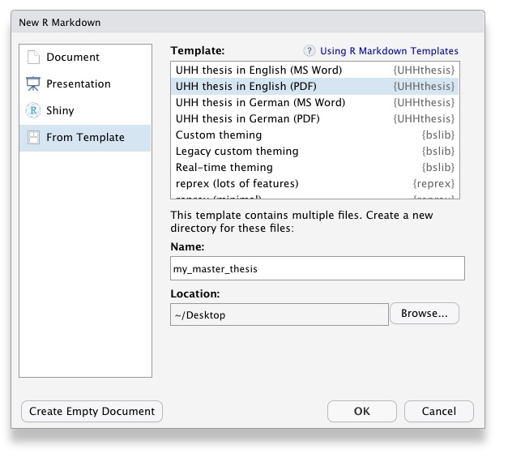
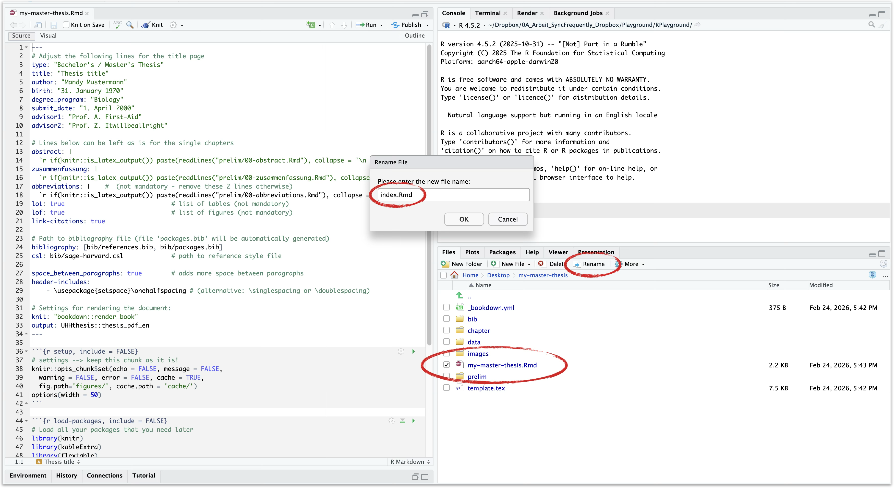
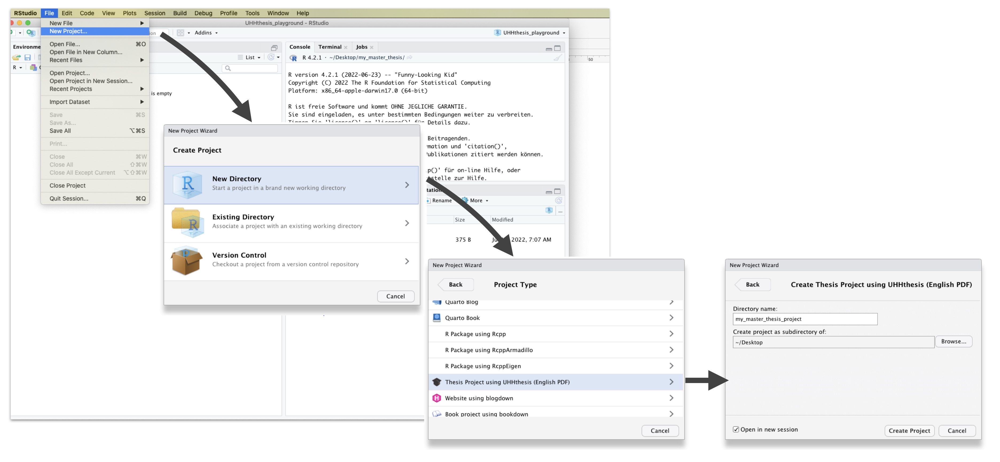
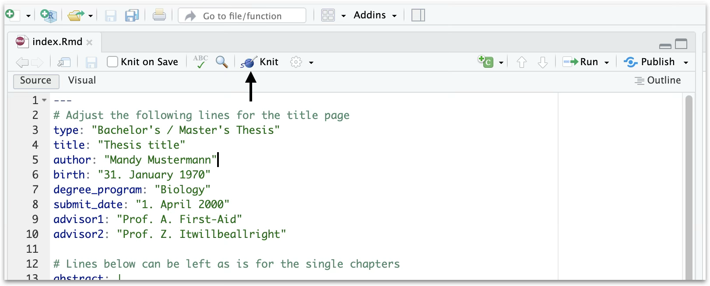

Erste Schritte mit UHHthesis
Source:vignettes/uhhthesis-getting-started-de.Rmd
uhhthesis-getting-started-de.RmdDiese Anleitung führt dich durch die Installation des UHHthesis-Pakets, das Anlegen eines neuen Thesis-Projekts, den Aufbau der Projektstruktur und das Erzeugen deiner ersten PDF- oder Word-Ausgabe.
Sobald dein Projekt eingerichtet ist, findest du in Abschlussarbeit schreiben eine vollständige Referenz zu YAML-Konfiguration, R-Markdown-Syntax, Abbildungen, Tabellen, Gleichungen, Zitaten, Querverweisen und Fehlerbehebung.
1. Voraussetzungen
Software
| Software | Mindestversion | Bezugsquelle |
|---|---|---|
| R | ≥ 4.2 | https://cran.r-project.org |
| RStudio oder Positron | aktuelle Version | https://posit.co/downloads/ |
| LaTeX | (siehe unten) | TinyTeX empfohlen |
LaTeX installieren (TinyTeX)
Für die PDF-Ausgabe wird eine LaTeX-Distribution benötigt. Am einfachsten ist TinyTeX, eine schlanke TeX-Live-Distribution, die fehlende Pakete automatisch nachinstalliert:
install.packages("tinytex")
tinytex::install_tinytex()
# Nach dem Neustart von RStudio prüfen:
tinytex:::is_tinytex()Alternativ kann auch eine vollständige Distribution verwendet werden:
UHHthesis installieren
# Abhängigkeiten installieren
if (!require("bookdown")) install.packages("bookdown")
if (!require("remotes")) install.packages("remotes")
# UHHthesis von GitHub installieren
remotes::install_github("uham-bio/UHHthesis")Empfohlene Pakete, die in den Vorlagen verwendet werden:
install.packages(c("knitr", "kableExtra", "flextable", "ggplot2"))2. Thesis-Projekt erstellen
Es gibt zwei Wege, ein neues Thesis-Projekt anzulegen. Methode 2 wird empfohlen, da die Hauptdatei dabei automatisch korrekt benannt wird.
Methode 1 — Über R Markdown Template
- In RStudio: File > New File > R Markdown… > From Template
- Eine der UHHthesis-Vorlagen auswählen:

- Einen Ordnernamen und Speicherort angeben, dann auf OK klicken.
-
Wichtig: Die erzeugte Datei muss in
index.Rmdumbenannt werden. bookdown schlägt fehl, wenn die Hauptdatei nichtindex.Rmdheißt.

Methode 2 — Über New Project (empfohlen)
- In RStudio: File > New Project… > New Directory
- Thesis Project using UHHthesis (German PDF) (oder die englische Variante) aus der Liste wählen:

- Projektnamen und Speicherort angeben, dann Create Project klicken.
- Das Projekt ist sofort bereit —
index.Rmdist bereits korrekt benannt.
3. Projektstruktur
Nach dem Erstellen sieht die Ordnerstruktur so aus:
deine-arbeit/
├── index.Rmd # Hauptdatei — die EINZIGE Datei, die geknitted wird
├── _bookdown.yml # Kapitelreihenfolge und Ausgabeeinstellungen
├── template.tex # LaTeX-Vorlage (nicht bearbeiten)
├── chapter/
│ ├── 01-einleitung.Rmd # Kapitel 1: Einleitung
│ ├── 02-methodik.Rmd # Kapitel 2: Material und Methodik
│ ├── 03-ergebnisse.Rmd # Kapitel 3: Ergebnisse
│ ├── 04-diskussion.Rmd # Kapitel 4: Diskussion
│ ├── 96-referenzen.Rmd # Literaturverzeichnis (automatisch, nicht bearbeiten)
│ ├── 97-danksagung.Rmd # Danksagung (optional)
│ ├── 98-anhang.Rmd # Anhang (optional)
│ └── 99-versicherung.Rmd # Eidesstattliche Versicherung (Pflicht!)
├── prelim/
│ ├── 00-abstract.Rmd # Englische Zusammenfassung
│ ├── 00-zusammenfassung.Rmd # Deutsche Zusammenfassung
│ └── 00-abkuerzungen.Rmd # Abkürzungsverzeichnis (optional)
├── bib/
│ ├── references.bib # Literaturdatenbank (manuell pflegen)
│ ├── packages.bib # Automatisch erzeugt
│ └── sage-harvard.csl # Zitierstil (austauschbar)
├── data/ # Datendateien (.csv, .xlsx, etc.)
├── images/ # Logos und externe Bilder
└── thesis-output/ # Generierte PDF/Word-Datei (nach dem Knitten)Wichtige Dateien erklärt
index.Rmd
Diese Datei enthält den YAML -Header, also sämtliche Metadaten, die am Anfang Deines Dokuments stehen müssen. Die Datei sollte außer dem YAML-Header und den direkt folgenden Code-Chunks nichts Weiteres enthalten! Der Text, der nach den Code-Chunks erscheint, dient nur zu Deiner Information und sollte nach dem Lesen gelöscht werden.
Die ersten Zeilen im YAML-Header konfigurieren das Titelblatt. Passe diese nach Bedarf an. In den folgenden Zeilen findest Du Kommentare, die erklären, welche Einträge unverändert bleiben müssen und welche Du bearbeiten darfst.
Knite immer diese Datei, um die Abschlussarbeit zu erzeugen.
_bookdown.yml
Dies ist die zentrale Konfigurationsdatei Deiner Thesis. Sie bestimmt, welche .Rmd-Dateien in die Ausgabe aufgenommen werden und in welcher Reihenfolge. Lege in dieser Datei die Reihenfolge Deienr Kapitel fest und stelle sicher, dass die Dateinamen mit denen in den entsprechenden Ordnern übereinstimmen.
prelim/
Dieser Ordner enthält die .Rmd-Dateien für die Teile, die vor dem Haupttext Deiner Thesis stehen, also Abstract, Zusammenfassung (deutsche Zusammenfassung) sowie optional das Abkürzungsverzeichnis. Das Tabellen- und das Abbildungsverzeichnis sind ebenfalls optional und werden automatisch erzeugt, daher sind hierfür keine zusätzlichen .Rmd-Dateien erforderlich.
chapter/
Dieser Ordner enthält die .Rmd-Dateien für jedes Kapitel Deiner
Thesis (z. B. 01-einleitung.Rmd,
02-methodik.Rmd usw.). Schreibe Deine
Abschlussarbeit in diesen Dateien.
Wenn Du in RStudio arbeitest, kann das Paket wordcountaddin hilfreich sein, um Wortzahlen und Lesbarkeitsstatistiken in R-Markdown-Dokumenten zu erhalten.
Dieser Ordner enthält außerdem den Backmatter-Teil (also Literaturverzeichnis, Danksagung, ergänzende Tabellen und Abbildungen aus Methoden- und Ergebnisabschnitten sowie Deine Eigenständigkeitserklärung).
Bitte beachte: Die Datei 96-referenzen.Rmd
wird automatisch erzeugt. Du musst hier nichts hinzufügen oder
ändern!
bib/
Dieser Ordner enthält die Literaturdateien. Fügen Sie Deine
Referenzen in references.bib ein. Die Datei
packages.bib wird automatisch erzeugt.
data/ and images/
Speichere hier Deine Datendateien sowie alle in der Thesis verwendeten Bilddateien und referenziere diese in Deinen R-Markdown-Dateien. Details zum Referenzieren von Tabellen und Abbildungen findest Du im Methoden-Kapitel der Vorlage sowie in Kapitel 2.2.1 der bookdown-Online-Dokumentation.
4. Arbeit rendern
index.Rmd in RStudio öffnen und den
Knit-Button klicken (oder Strg+Shift+K /
Cmd+Shift+K):

Alternativ über die R-Konsole:
bookdown::render_book("index.Rmd")Die fertige Datei (thesis.pdf oder
thesis.docx) erscheint im Ordner
thesis-output/.
Goldene Regel: Immer nur
index.Rmdknitten. Einzelne Kapiteldateien niemals direkt knitten — bookdown fügt alle Kapitel automatisch zusammen.
Word-Ausgabe
Um statt PDF eine Word-Datei zu erzeugen, die
output:-Zeile in index.Rmd ändern:
Beachte: Für die Word-Ausgabe gibt es eine eigene Vorlage (Template
UHH thesis in German (Word)), die sich im
YAML-Kopfbereich und bei den Paketen leicht unterscheidet. Insbesondere
wird kableExtra dort nicht verwendet;
stattdessen wird flextable für Tabellen eingesetzt, da es
sowohl für PDF als auch Word funktioniert.
Fehlende LaTeX-Pakete
Falls beim Rendern ein LaTeX-Paket fehlt, gibt TinyTeX eine entsprechende Fehlermeldung aus. Du kannst fehlende Pakete so nachinstallieren:
tinytex::tlmgr_install("paketname")Bei hartnäckigen Problemen kann ein Update helfen:
tinytex::tlmgr_update()Weiter: Abschlussarbeit schreiben — R-Markdown-Syntax, Abbildungen, Tabellen, Gleichungen, Zitate, Querverweise und Fehlerbehebung.